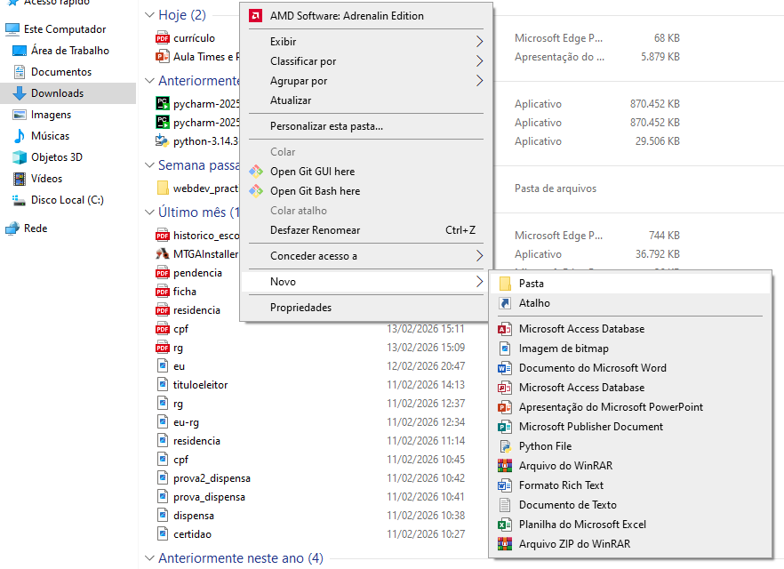
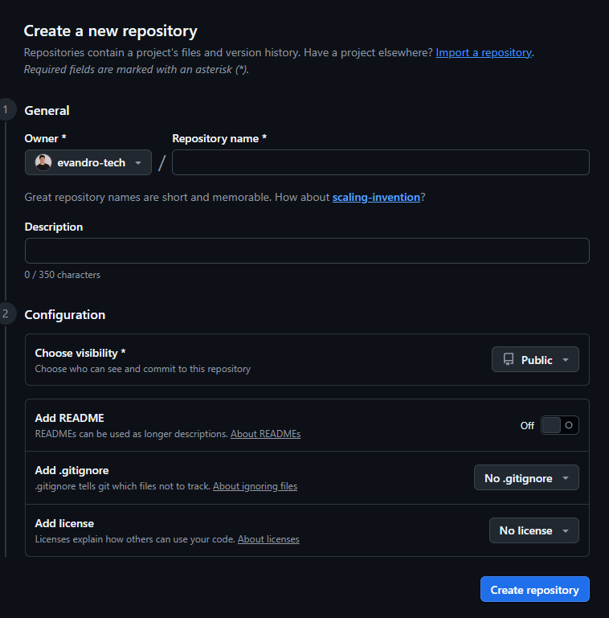

Primeiramente crie um projeto no explorador de arquivos e abra ele na plataforma visual studio code. Como mostram as figuras a seguir:
Se você não tem o visual studio code instalado. Segue o link de instalção: Clique aqui.

Criou seu projeto? Ta na hora de criar seu diretório no gihub.
